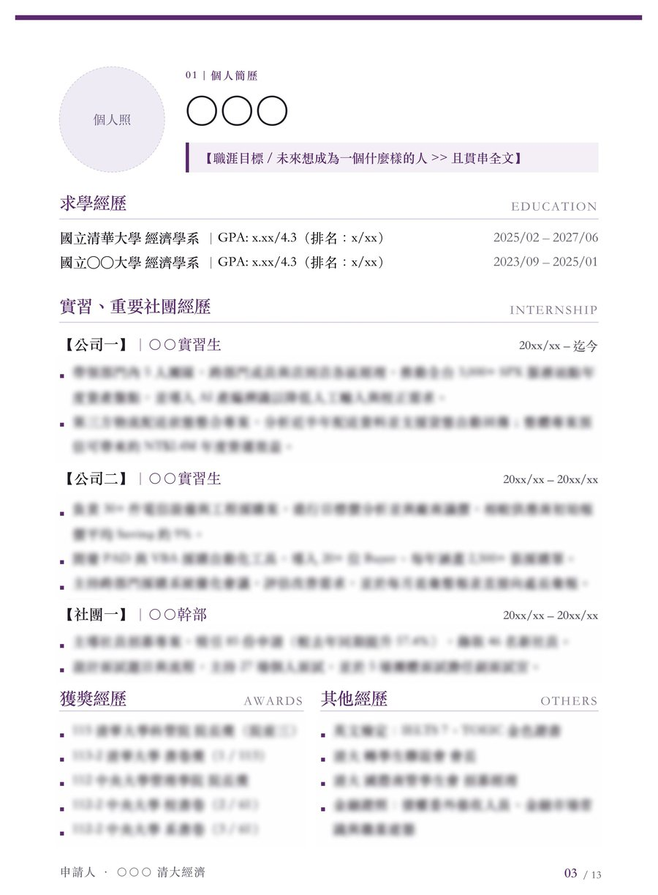
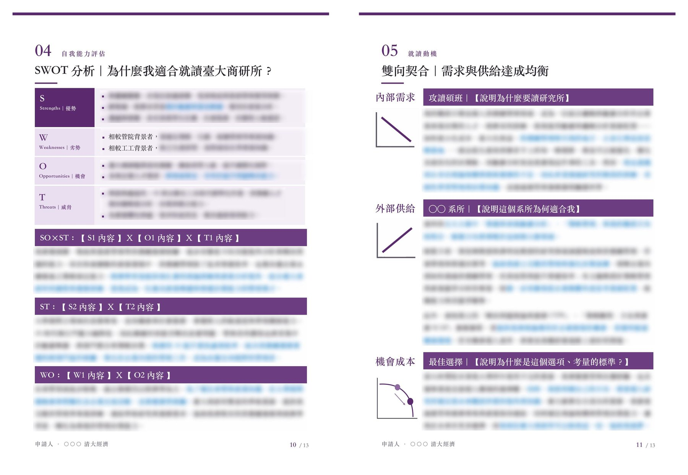
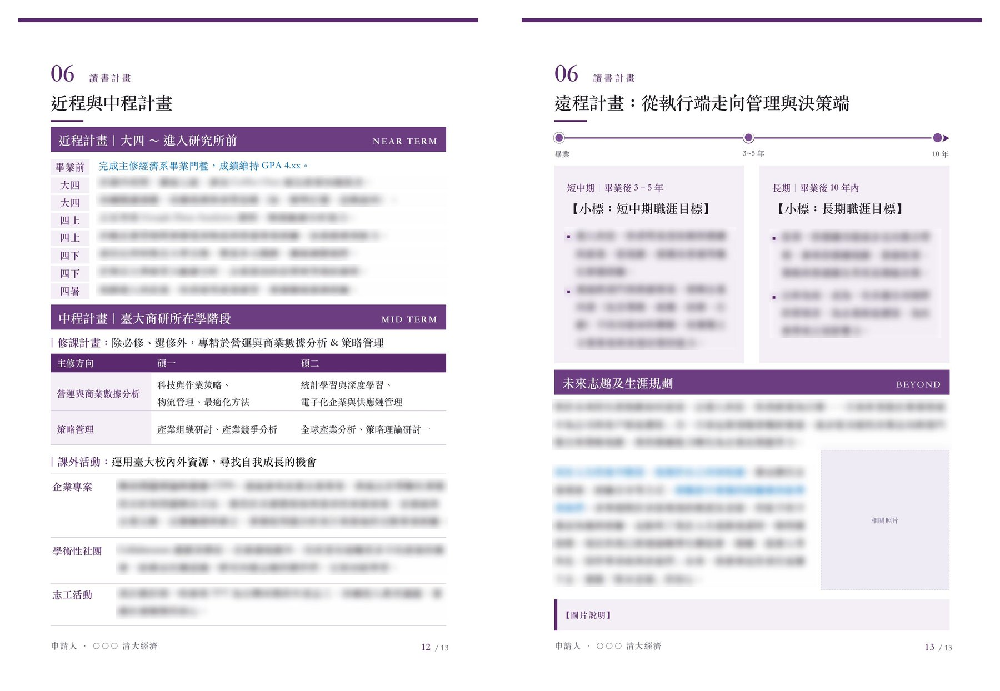

首頁 / 書審
書審
取書審分數前 66 名進口試。口試時教授手上會有個人資料表，國企所需另準備兩份成績單正本。
01前言
故事線
一條是職涯發展，另一條是我希望成為什麼樣的人。著重描寫為了達成這個目標，我過去付出了哪些行動、成果如何、對我帶來了哪些影響。
自我能力評估
不建議使用雷達圖。我認為這些能力無法被量化，我也無法解釋我的領導力跟數學能力孰優孰劣。我推薦 SWOT＋TOWS，簡單明瞭。
要特別注意 W 這項：SWOT 比較的對象是其他申請者（例如科系背景、修課領域），所以 W 本身就是必然存在的劣勢，不會、也不應造成嚴重的扣分。
就讀動機
因為我是經濟系的，所以分成需求、供給、機會成本三點來寫：
- 需求：解釋我攻讀碩班的動機。
- 供給：說明 OO 所在課程、師資、學校與學院各層面可以如何幫助我。
- 機會成本：作為收束，例如不直接進入職場的原因 → 因此 OO 所是最適合我的下一步。
個人資料表
設計編排很重要。商研所的規定多，國企所的排版彈性比較大。我把文字欄位改成表格形式，展現資訊呈現的功力，也藉此突顯個人亮點。詳見 02 個人資料表。
02個人資料表
整包申請中最重要的一項，我是學習計劃書完成才回來寫。書審階段要精心打磨，口試時要能侃侃而談。
一、揚長避短
- 盡可能展現自己優勢中相對強勢的部分、避免過多著墨於優勢中的劣勢。
eg. 多益 860-895 > 金色，900+ > 直接寫分數 - 口試時，教授勢必會在其中挑 1-2 題來問，其中社團經歷更是考古題中的常客，建議花點心思準備。
- 國企所有兩個欄位要寫成一條故事線：它們應該能前後接起來，或說明你為什麼有了轉變。
- 將欄位以表格的形式呈現，展現資訊呈現的功力，也能突顯個人的亮點。
- 商研所限制較多，有既定的格式、書寫要求（僅能列點說明）；國企所雖限 1 頁但有更大排版彈性，可以在欄位內自由運用。
不過，我認為最重要還是展現個人的故事線。我自己不到 900 分但還是放了分數，因為我想展現我後來我的英文能力是有成長的（雅思），事實上也真的在口試被問到。當然這沒有一個放諸四海的標準，就看個人選擇。


03
學習計畫書整份學習計畫書其實只在講一件事：我要成為什麼樣的人，所以我需要這個所。從封面到最後一頁，每個段落都要能接回這個目標。我把它拆成五個問題來寫。
第一眼：封面、目錄、簡歷
要做封面就得好好設計，畢竟是第一頁。封面我只放兩樣東西：1–2 句話說明未來的目標與達成方式，加上 3–4 組數據（GPA、排名、獎項、檢定成績）。
目錄見仁見智。有人建議把動機放最前面，但我的故事線不適合這樣排；有了目錄，只想看動機的教授也能直接跳過去。
簡歷的名字下方再放一次目標，跟封面呼應。直接貼 CV 感覺怪怪的，所以我依整份書審的版型客製了一份。


我是誰：自傳、求學與修課
成長背景簡單帶過就好，它的任務是當作導入，說明我的特質從哪裡來。
個人特質是最難寫的部分。我的原則是不描述特質，只講經歷：內文不會出現「領導力」這種詞，而是透過社團、實習的具體經歷，讓教授自己感受到。最後再把這些特質收束成我在團隊中、在未來職涯中會是什麼樣的人。至於要選哪些特質，可以參考系所官網，不外乎領導力、溝通能力、團隊合作，至少寫到 1–2 個。

求學經歷用 why / so what 的邏輯串：當初為什麼讀這個系、目標是什麼 → 職涯方向怎麼轉變 → 現在想往哪個領域發展。
修課經歷則是一頁完整的故事：過去三年怎麼規劃、成績如何、各領域占多少，再連到未來 OO 所能給我什麼。圖表跟著成績走勢選，我去年用折線圖，今年因為成績走勢不同改用柱狀圖；修課占比只是輔助這頁故事的資料。

我做過什麼：專業能力養成
實習、社團、競賽、專案、專題都算。東西不多就用表格整理；東西很多就用 STAR，但 S 和 T 可以壓縮，篇幅留給 Action：
- S：背景、職責、目標，2–3 行交代完。
- T：把任務分成幾個區塊。
- A：照 T 的區塊逐點說明做了什麼。
- R：用圖表和數據說話，impact 多大、比過去提升多少、我貢獻了多少。
為什麼是我、為什麼是這裡：能力評估、就讀動機
能力評估我用 SWOT＋TOWS，不用雷達圖——我沒辦法說明自己的領導力和數學能力哪個比較高。SWOT 的比較對象是其他申請者，所以 W 寫的是背景上必然存在的劣勢（例如相較商管、工工背景），不會造成嚴重扣分；千萬別寫成「我英文很爛」這種真的扣分的缺點。TOWS 則接著說明怎麼發揮優勢、補足劣勢。

就讀動機我用經濟系熟悉的需求、供給、機會成本來寫：
- 需求：重申我的目標，所以我需要讀研究所，而且是 OO 所。
- 供給：OO 所在課程、師資、學校與學院資源三方面能怎麼幫我。
- 機會成本：為什麼不直接進職場，收束到「貴所是最適合我的下一步」。

接下來：讀書計劃
比起寫「想做什麼」，更有說服力的是寫正在做什麼、能達成什麼。題外話，我去年在商研所寫的計畫全部達成，這大概也是我敢在口試直接說自己二戰的原因。
- 現在 ~ 研究所：正在進行的準備，以及它們的目的。
- 研究所階段：修課看這幾年實際有開的課（系網不太準，很多都沒開了）；課外則是競賽、社團、專案、社會服務。
- 未來 3–5 年與 10 年：進入什麼產業、做什麼，最後一定要接回自己的目標。
- 生涯規劃：替另一條故事線收尾。前面提過想成為什麼樣的人，這裡用圖片呈現已經透過哪些經歷實踐，再說明未來會用什麼形式繼續達成。

04其他有利審查資料
整理中。
05書審心得精選
整理中。